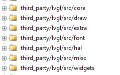
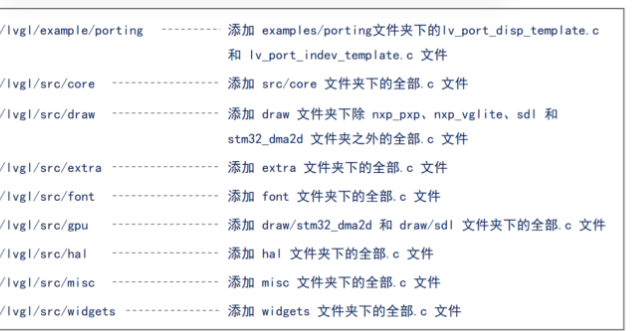
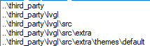
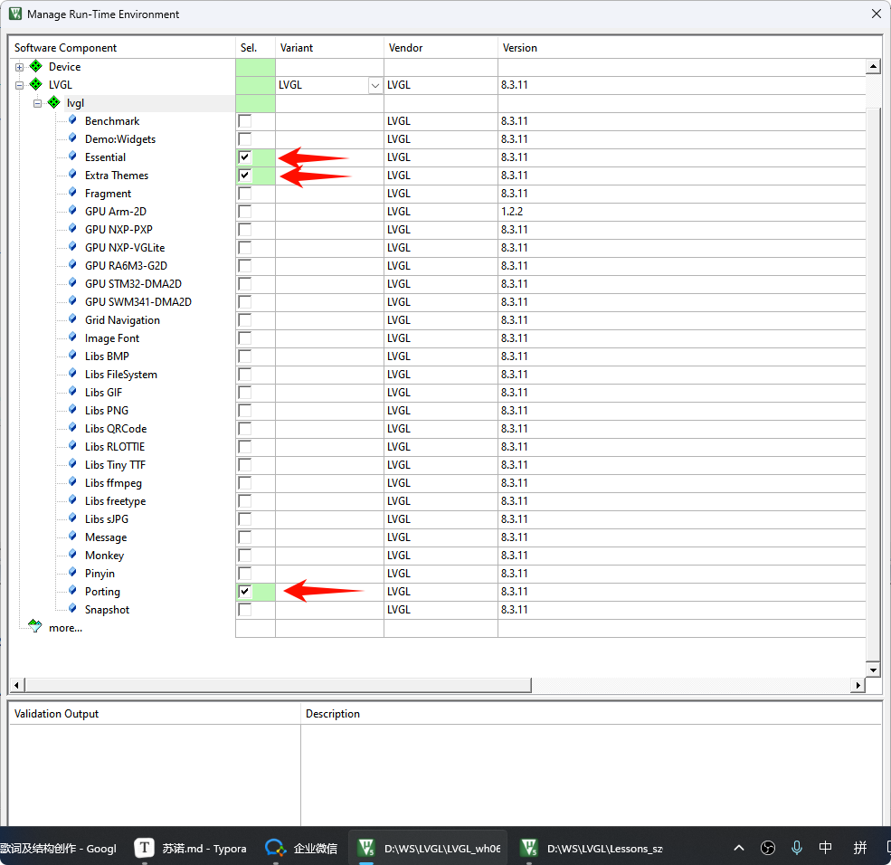
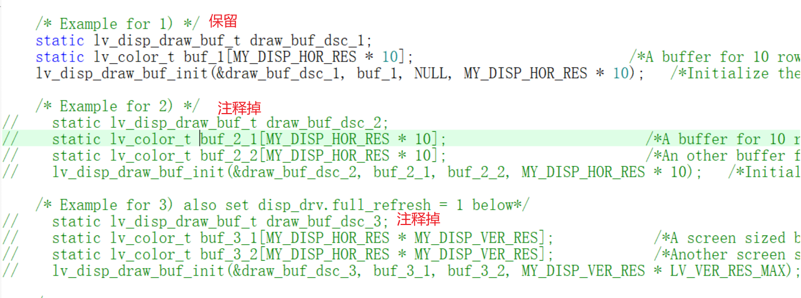
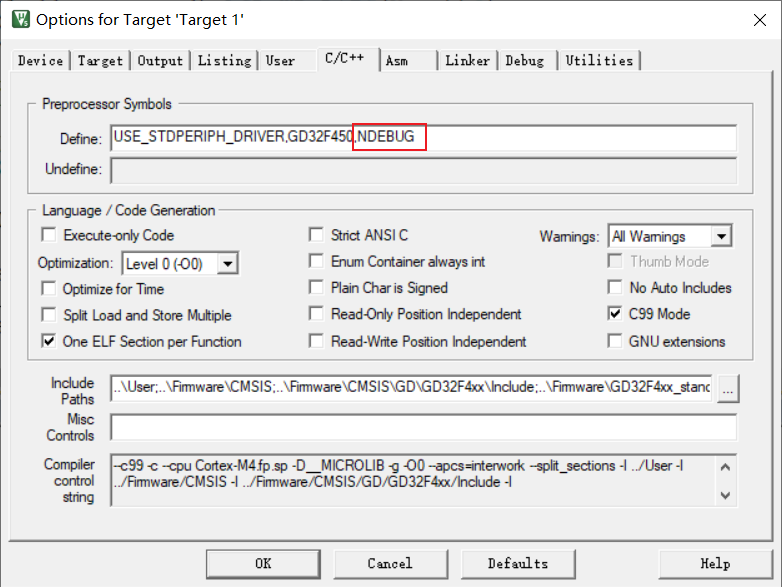

<!DOCTYPE lake>
<p data-lake-id="u07d95d87" id="u07d95d87"><span data-lake-id="u33818fb8" id="u33818fb8">可用表盘资源：</span><a data-lake-id="u2ec18185" href="https://amazfitwatchfaces.com/" id="u2ec18185" rel="noopener noreferrer" target="_blank"><span data-lake-id="uba58df52" id="uba58df52">https://amazfitwatchfaces.com/</span></a></p><h1 data-lake-id="hVRLY" id="hVRLY"><span data-lake-id="ua4db927d" id="ua4db927d" style="color: rgb(51, 51, 51)">移植准备</span></h1><ol list="uefc6265d"><li data-lake-id="ubb2b5981" fid="u1b2e0b7a" id="ubb2b5981"><span class="lake-fontsize-12" data-lake-id="u69d736bf" id="u69d736bf" style="color: rgb(51, 51, 51)">基于GD32屏幕扩展板mcu屏幕源码</span><span class="lake-fontsize-12" data-lake-id="u34a4357f" id="u34a4357f" style="color: rgb(51, 51, 51); background-color: rgb(243, 244, 244)">Screen_MCU</span><span class="lake-fontsize-12" data-lake-id="u9c3b6ccc" id="u9c3b6ccc" style="color: rgb(51, 51, 51)">移植</span></li><li data-lake-id="u03837367" fid="u1b2e0b7a" id="u03837367"><span class="lake-fontsize-12" data-lake-id="u23effb7c" id="u23effb7c" style="color: rgb(51, 51, 51)">准备包含触摸功能的屏幕</span></li><li data-lake-id="u3439c980" fid="u1b2e0b7a" id="u3439c980"><span class="lake-fontsize-12" data-lake-id="u8fc5f9ac" id="u8fc5f9ac" style="color: rgb(51, 51, 51)">下载lvgl 8.3版本源码下载地址:</span><span data-lake-id="u8401c927" id="u8401c927">https://github.com/lvgl/lvgl</span></li><li data-lake-id="uff16fd09" fid="u1b2e0b7a" id="uff16fd09"><span data-lake-id="u1c772df9" id="u1c772df9">参考文档:</span></li></ol><ul list="u01991393"><li data-lake-id="ucb52bb70" fid="udf766821" id="ucb52bb70"><span data-lake-id="udab2c9c9" id="udab2c9c9">v8.3：</span><a data-lake-id="ua17b87e9" href="https://docs.lvgl.io/8.4/porting/project.html" id="ua17b87e9" rel="noopener noreferrer" target="_blank"><span data-lake-id="u95e054ee" id="u95e054ee">https://docs.lvgl.io/8.4/porting/project.html</span></a></li><li data-lake-id="u18ef152b" fid="udf766821" id="u18ef152b"><span data-lake-id="u3a45fc06" id="u3a45fc06">v9.3：</span><a data-lake-id="u51a96ff7" href="https://docs.lvgl.io/9.3/details/integration/adding-lvgl-to-your-project/connecting_lvgl.html" id="u51a96ff7" rel="noopener noreferrer" target="_blank"><span data-lake-id="ubc5efa9b" id="ubc5efa9b">https://docs.lvgl.io/9.3/details/integration/adding-lvgl-to-your-project/connecting_lvgl.html</span></a></li></ul><h1 data-lake-id="NntA7" id="NntA7"><span data-lake-id="u4e978a1a" id="u4e978a1a">准备开发环境</span></h1><h2 data-lake-id="VaPrk" id="VaPrk"><span data-lake-id="u7441df30" id="u7441df30">方式一：拷贝源码</span></h2><h3 data-lake-id="SVees" data-lake-index-type="2" id="SVees"><span data-lake-id="u214058e9" id="u214058e9">删除源码</span></h3><p data-lake-id="u9cb7bd23" id="u9cb7bd23"><span data-lake-id="ua64ed3aa" id="ua64ed3aa">删除源码中不需要的文件夹，仅保留如下内容</span></p><ol list="u7329b297"><li data-lake-id="u528450b5" fid="u3e440ef7" id="u528450b5"><span data-lake-id="u897515b8" id="u897515b8">demos          	 :  lvgl综合案例</span></li><li data-lake-id="u9278044b" fid="u3e440ef7" id="u9278044b"><span data-lake-id="udde0ec95" id="udde0ec95">examples	      	：单个功能案例	</span></li><li data-lake-id="u6b591201" fid="u3e440ef7" id="u6b591201"><span data-lake-id="u341a008e" id="u341a008e">src		     	： 源代码	</span></li><li data-lake-id="u996ef1c5" fid="u3e440ef7" id="u996ef1c5"><span data-lake-id="u3924e8d0" id="u3924e8d0">lv_conf_template.h  ： 重要的配置文件，里面存在非常多的开关</span></li><li data-lake-id="ud315753d" fid="u3e440ef7" id="ud315753d"><span data-lake-id="u9bc191ad" id="u9bc191ad">lvgl.h		： 头文件</span></li></ol><p data-lake-id="uccc3bc04" id="uccc3bc04"><span data-lake-id="uac0cadb4" id="uac0cadb4">将上述内容存放到名为</span><strong><span data-lake-id="u95434aa5" id="u95434aa5">lvgl</span></strong><span data-lake-id="u4a6861e2" id="u4a6861e2">的文件夹中</span></p><h3 data-lake-id="O0hqQ" data-lake-index-type="2" id="O0hqQ"><span data-lake-id="u72d73ecc" id="u72d73ecc" style="color: rgb(51, 51, 51)">导入lvgl到项目</span><span data-lake-id="ueba104a2" id="ueba104a2" style="color: rgb(51, 51, 51); background-color: rgb(243, 244, 244)">screen_mcu</span><span data-lake-id="u4065dac4" id="u4065dac4" style="color: rgb(51, 51, 51)">中</span></h3><ol list="ubd8be387"><li data-lake-id="ubc745057" fid="u58392c7c" id="ubc745057"><span data-lake-id="uab525b67" id="uab525b67">在</span><code data-lake-id="ud46321ff" id="ud46321ff"><span data-lake-id="u826fa581" id="u826fa581">screen_mcu</span></code><span data-lake-id="uf4d100ee" id="uf4d100ee">项目中新建</span><code data-lake-id="ub3a253e7" id="ub3a253e7"><span data-lake-id="u02d560d5" id="u02d560d5">third_party</span></code><span data-lake-id="uf1452c37" id="uf1452c37">文件夹</span></li><li data-lake-id="ubb21bd59" fid="u58392c7c" id="ubb21bd59"><span data-lake-id="u86ccd259" id="u86ccd259">将第1个步骤中的</span><code data-lake-id="uee0560e0" id="uee0560e0"><span data-lake-id="uf0946bc7" id="uf0946bc7">lvgl</span></code><span data-lake-id="uc070de83" id="uc070de83">文件夹拷入其中</span></li><li data-lake-id="u931ede47" fid="u58392c7c" id="u931ede47"><span data-lake-id="ucf6928e3" id="ucf6928e3">将lvgl文件夹中的</span><code data-lake-id="u7a3498e3" id="u7a3498e3"><span data-lake-id="u33578339" id="u33578339">lv_conf_tempalate.h修改</span></code><span data-lake-id="ubceab338" id="ubceab338">为</span><code data-lake-id="ube99d8ea" id="ube99d8ea"><span data-lake-id="ud5e00c3d" id="ud5e00c3d">lv_conf.h</span></code></li><li data-lake-id="u196f2536" fid="u58392c7c" id="u196f2536"><span data-lake-id="uf97c6fb3" id="uf97c6fb3">把</span><code data-lake-id="uace3cc55" id="uace3cc55"><span data-lake-id="ufa190433" id="ufa190433">lv_conf.h</span></code><span data-lake-id="ub9044b8e" id="ub9044b8e">的条件编译指令</span><code data-lake-id="uff60b8f6" id="uff60b8f6"><span data-lake-id="u9af053d6" id="u9af053d6">#if 0</span></code><span data-lake-id="u1e915f36" id="u1e915f36">修改成</span><code data-lake-id="u95d4e96f" id="u95d4e96f"><span data-lake-id="u521c199c" id="u521c199c">#if 1</span></code></li></ol><h3 data-lake-id="T8B29" data-lake-index-type="2" id="T8B29"><span data-lake-id="uc0c1cdc3" id="uc0c1cdc3" style="color: rgb(51, 51, 51)">keil添加分组和头文件</span></h3><ol list="u4b32e634"><li data-lake-id="u670f442d" fid="ud0c905a0" id="u670f442d"><span class="lake-fontsize-12" data-lake-id="u2b415b12" id="u2b415b12" style="color: rgb(51, 51, 51)">使用keil打开</span><span class="lake-fontsize-12" data-lake-id="u47eff6d5" id="u47eff6d5" style="color: rgb(51, 51, 51); background-color: rgb(243, 244, 244)">screen_mcu</span><span class="lake-fontsize-12" data-lake-id="u86882be7" id="u86882be7" style="color: rgb(51, 51, 51)">项目,添加如下分组</span></li></ol><p data-lake-id="u5308b638" id="u5308b638"></p><span class="yuque-card-unsupported">[codeblock]</span><ol list="u4b32e634" start="2"><li data-lake-id="u4249cc83" fid="ud0c905a0" id="u4249cc83"><span class="lake-fontsize-12" data-lake-id="u509e0adb" id="u509e0adb" style="color: rgb(51, 51, 51)">添加LVGL相关的.c文件到相应分组,如下:</span></li></ol><p data-lake-id="ucc2b8efd" id="ucc2b8efd"></p><ol list="u4b32e634" start="3"><li data-lake-id="ub37ba7be" fid="ud0c905a0" id="ub37ba7be"><span class="lake-fontsize-12" data-lake-id="u020d7a06" id="u020d7a06" style="color: rgb(51, 51, 51)">添加头文件路径</span></li></ol><p data-lake-id="ub35136a6" id="ub35136a6"></p><ol list="u4b32e634" start="4"><li data-lake-id="ufc5e92fe" fid="ud0c905a0" id="ufc5e92fe"><span class="lake-fontsize-12" data-lake-id="ue98cc5a6" id="ue98cc5a6" style="color: rgb(51, 51, 51)">开启C99模式</span></li></ol><p data-lake-id="u80664f3f" id="u80664f3f"><span class="lake-fontsize-12" data-lake-id="u3f068485" id="u3f068485" style="color: rgb(51, 51, 51)">​</span><br/></p><h2 data-lake-id="vN7I5" id="vN7I5"><span data-lake-id="u13c02ca2" id="u13c02ca2" style="color: rgb(51, 51, 51)">方式二：使用8.3.11自动添加</span></h2><p data-lake-id="u5a1709b7" id="u5a1709b7"><span class="lake-fontsize-12" data-lake-id="ud0e23196" id="ud0e23196" style="color: rgb(51, 51, 51)">如果觉得添加c和头文件麻烦，也可以按照如下操作进行：</span><a class="yuque-card-link" href="../../_assets/d21ffe5aa951ddaabbcaba0c.zip">LVGL_pack.zip</a></p><blockquote class="lake-alert lake-alert-warning" data-lake-id="uc5c6faec" id="uc5c6faec"><p data-lake-id="u654afc9a" id="u654afc9a"><span class="lake-fontsize-12" data-lake-id="ua2c775f0" id="ua2c775f0">安装 pack包：LVGL.lvgl.8.3.11.pack， 按照如下勾选进行配置：</span></p><ul list="uff01e7f8"><li data-lake-id="uf68ac70e" fid="u4bedc16e" id="uf68ac70e"><span class="lake-fontsize-12" data-lake-id="u6f6f03a6" id="u6f6f03a6">Essential</span></li><li data-lake-id="u05fa8d89" fid="u4bedc16e" id="u05fa8d89"><span class="lake-fontsize-12" data-lake-id="ubca2b1d4" id="ubca2b1d4">Extra Themes</span></li><li data-lake-id="u413592dc" fid="u4bedc16e" id="u413592dc"><span class="lake-fontsize-12" data-lake-id="ucbd1d3f0" id="ucbd1d3f0">Porting</span></li></ul><p data-lake-id="u5bf9a552" id="u5bf9a552"></p></blockquote><p data-lake-id="u055e7ec0" id="u055e7ec0"><span data-lake-id="uf0d85cba" id="uf0d85cba">​</span><br/></p><p data-lake-id="u592928b6" id="u592928b6"><span data-lake-id="u6bf5e8c1" id="u6bf5e8c1">如果未勾选</span><strong><span data-lake-id="ud59d339f" id="ud59d339f">Extra Themes</span></strong><span data-lake-id="u9cd724b8" id="u9cd724b8">，则会导致【按钮】【滑块】等组件没有背景，按下抬起等主题效果。</span></p><h1 data-lake-id="ip1gH" id="ip1gH"><span data-lake-id="u43b20818" id="u43b20818" style="color: rgb(51, 51, 51)">移植显示驱动</span></h1><ol list="u41b6f1b9"><li data-lake-id="u737fd70f" fid="u4adc8ea3" id="u737fd70f"><span class="lake-fontsize-12" data-lake-id="u0f815fd2" id="u0f815fd2" style="color: rgb(51, 51, 51)">把</span><span class="lake-fontsize-12" data-lake-id="u665b955c" id="u665b955c" style="color: rgb(51, 51, 51); background-color: rgb(243, 244, 244)">lv_port_disp_template.c/h</span><span class="lake-fontsize-12" data-lake-id="u9ba214c6" id="u9ba214c6" style="color: rgb(51, 51, 51)">的条件编译指令</span><span class="lake-fontsize-12" data-lake-id="u377709ae" id="u377709ae" style="color: rgb(51, 51, 51); background-color: rgb(243, 244, 244)">#if 0</span><span class="lake-fontsize-12" data-lake-id="u691e4266" id="u691e4266" style="color: rgb(51, 51, 51)">修改成</span><span class="lake-fontsize-12" data-lake-id="u94252cc4" id="u94252cc4" style="color: rgb(51, 51, 51); background-color: rgb(243, 244, 244)">#if 1</span></li><li data-lake-id="u7b258c74" fid="u4adc8ea3" id="u7b258c74"><span class="lake-fontsize-12" data-lake-id="uac912742" id="uac912742" style="color: rgb(51, 51, 51); background-color: rgb(243, 244, 244)">lv_port_disp_template.h</span><span class="lake-fontsize-12" data-lake-id="u67430ee4" id="u67430ee4" style="color: rgb(51, 51, 51)">中包含屏幕显示驱动</span><span class="lake-fontsize-12" data-lake-id="uf000e000" id="uf000e000" style="color: rgb(51, 51, 51); background-color: rgb(243, 244, 244)">st7789.h</span></li><li data-lake-id="uecc9ee33" fid="u4adc8ea3" id="uecc9ee33"><span class="lake-fontsize-12" data-lake-id="u4c7c05d7" id="u4c7c05d7" style="color: rgb(51, 51, 51); background-color: rgb(243, 244, 244)">lv_port_disp_template.h</span><span class="lake-fontsize-12" data-lake-id="u5c4074ed" id="u5c4074ed" style="color: rgb(51, 51, 51)">中宏定义水平和竖直分辨率(默认横屏)</span></li></ol><span class="yuque-card-unsupported">[codeblock]</span><p data-lake-id="u97d07957" id="u97d07957"><br/></p><ol list="u41b6f1b9" start="4"><li data-lake-id="u10575660" fid="u4adc8ea3" id="u10575660"><span class="lake-fontsize-12" data-lake-id="u90c98648" id="u90c98648" style="color: rgb(51, 51, 51)">修改 </span><span class="lake-fontsize-12" data-lake-id="ubdd040a9" id="ubdd040a9" style="color: rgb(51, 51, 51); background-color: rgb(243, 244, 244)">lv_port_disp_template.c中 的 lv_port_disp_init </span><span class="lake-fontsize-12" data-lake-id="u0bf1f9c4" id="u0bf1f9c4" style="color: rgb(51, 51, 51)">函数</span></li></ol><p data-lake-id="uddf0b1f0" id="uddf0b1f0"><span class="lake-fontsize-12" data-lake-id="u0fe01fae" id="u0fe01fae" style="color: rgb(51, 51, 51)">配置图形数据缓冲模式</span></p><p data-lake-id="u7ac9cfd4" id="u7ac9cfd4"><span class="lake-fontsize-12" data-lake-id="ub85d4d6f" id="ub85d4d6f" style="color: rgb(119, 119, 119)">在</span><span class="lake-fontsize-12" data-lake-id="u1a6de0f3" id="u1a6de0f3" style="color: rgb(119, 119, 119); background-color: rgb(243, 244, 244)">lv_port_disp_init</span><span class="lake-fontsize-12" data-lake-id="u7ec08622" id="u7ec08622" style="color: rgb(119, 119, 119)">函数中选择一种缓冲模式,注释掉其它两种模式</span></p><p data-lake-id="u4cb9f607" id="u4cb9f607"></p><ol list="u41b6f1b9" start="5"><li data-lake-id="u5200566b" fid="u4adc8ea3" id="u5200566b"><span data-lake-id="u579dcde0" id="u579dcde0">初始化ST7789</span></li></ol><span class="yuque-card-unsupported">[codeblock]</span><ol list="u41b6f1b9" start="6"><li data-lake-id="uc146a25b" fid="u4adc8ea3" id="uc146a25b"><span class="lake-fontsize-12" data-lake-id="u34f3ebf8" id="u34f3ebf8" style="color: rgb(51, 51, 51)">在</span><span class="lake-fontsize-12" data-lake-id="u457023eb" id="u457023eb" style="color: rgb(51, 51, 51); background-color: rgb(243, 244, 244)">disp_flush</span><span class="lake-fontsize-12" data-lake-id="ud923ba0b" id="ud923ba0b" style="color: rgb(51, 51, 51)">函数中配置打点输出</span></li></ol><span class="yuque-card-unsupported">[codeblock]</span><h1 data-lake-id="Whnhy" id="Whnhy"><span data-lake-id="ucf0eab4b" id="ucf0eab4b" style="color: rgb(51, 51, 51)">移植触摸驱动</span></h1><ol list="ubf036ef6"><li data-lake-id="ud13d918c" fid="u9cc79d86" id="ud13d918c"><span class="lake-fontsize-12" data-lake-id="ubc52413c" id="ubc52413c" style="color: rgb(51, 51, 51)">把</span><span class="lake-fontsize-12" data-lake-id="ud3d371bf" id="ud3d371bf" style="color: rgb(51, 51, 51); background-color: rgb(243, 244, 244)">lv_port_indev_tempalte.c/h</span><span class="lake-fontsize-12" data-lake-id="u705ec985" id="u705ec985" style="color: rgb(51, 51, 51)">的条件编译</span><span class="lake-fontsize-12" data-lake-id="ua9aad683" id="ua9aad683" style="color: rgb(51, 51, 51); background-color: rgb(243, 244, 244)">#if 0</span><span class="lake-fontsize-12" data-lake-id="u4c05e0d4" id="u4c05e0d4" style="color: rgb(51, 51, 51)">修改成</span><span class="lake-fontsize-12" data-lake-id="ubffacd49" id="ubffacd49" style="color: rgb(51, 51, 51); background-color: rgb(243, 244, 244)"># if 1</span></li><li data-lake-id="uf7ebda50" fid="u9cc79d86" id="uf7ebda50"><span class="lake-fontsize-12" data-lake-id="ud9abc730" id="ud9abc730" style="color: rgb(51, 51, 51)">在</span><span class="lake-fontsize-12" data-lake-id="ud2988af1" id="ud2988af1" style="color: rgb(51, 51, 51); background-color: rgb(243, 244, 244)">lv_port_indev_tempalte.c</span><span class="lake-fontsize-12" data-lake-id="uaa558a90" id="uaa558a90" style="color: rgb(51, 51, 51)">中裁剪输入设备</span></li></ol><ul list="u42706a11"><li data-lake-id="u0e1ecc97" fid="u97afa092" id="u0e1ecc97"><span class="lake-fontsize-12" data-lake-id="uade3bbe1" id="uade3bbe1" style="color: rgb(51, 51, 51)">只保留</span><span class="lake-fontsize-12" data-lake-id="u149cf1ec" id="u149cf1ec" style="color: rgb(51, 51, 51); background-color: rgb(243, 244, 244)">touchpad_xxx</span><span class="lake-fontsize-12" data-lake-id="ub479ad03" id="ub479ad03" style="color: rgb(51, 51, 51)">相关的方法,删除其它方法</span></li><li data-lake-id="uc5fe8c3c" fid="u97afa092" id="uc5fe8c3c"><span class="lake-fontsize-12" data-lake-id="u3807ff7b" id="u3807ff7b" style="color: rgb(51, 51, 51); background-color: rgb(243, 244, 244)">lv_port_indev_init</span><span class="lake-fontsize-12" data-lake-id="u90e98f09" id="u90e98f09" style="color: rgb(51, 51, 51)">中只保留touchpad相关的代码</span></li><li data-lake-id="u483e0863" fid="u97afa092" id="u483e0863"><span class="lake-fontsize-12" data-lake-id="ubacb7f21" id="ubacb7f21" style="color: rgb(51, 51, 51)">在</span><span class="lake-fontsize-12" data-lake-id="uea12a8b6" id="uea12a8b6" style="color: rgb(51, 51, 51); background-color: rgb(243, 244, 244)">touchpad_init</span><span class="lake-fontsize-12" data-lake-id="u6d1aac5e" id="u6d1aac5e" style="color: rgb(51, 51, 51)">方法中执行触摸屏初始化</span><span class="lake-fontsize-12" data-lake-id="ub7cb795b" id="ub7cb795b" style="color: rgb(51, 51, 51); background-color: rgb(243, 244, 244)">CST816T_Init();</span></li></ul><span class="yuque-card-unsupported">[codeblock]</span><p data-lake-id="u8fd4ee3c" id="u8fd4ee3c"><br/></p><ol list="ubf036ef6" start="3"><li data-lake-id="u0f2e8ab4" fid="u9cc79d86" id="u0f2e8ab4"><span class="lake-fontsize-12" data-lake-id="u12d97f34" id="u12d97f34" style="color: rgb(51, 51, 51)">配置触摸检测函数</span></li></ol><span class="yuque-card-unsupported">[codeblock]</span><ol list="u583d67bb" start="5"><li data-lake-id="ufa2894cb" fid="u1e324760" id="ufa2894cb"><span class="lake-fontsize-12" data-lake-id="ud9f85790" id="ud9f85790" style="color: rgb(51, 51, 51)">配置坐标获取函数</span></li></ol><span class="yuque-card-unsupported">[codeblock]</span><p data-lake-id="u975e7ea0" id="u975e7ea0"><br/></p><p data-lake-id="u04af2958" id="u04af2958"><strong><span data-lake-id="u544fb5fe" id="u544fb5fe" style="color: #DF2A3F">提示</span></strong></p><p data-lake-id="uf692875e" id="uf692875e"><code data-lake-id="u222b8f5a" id="u222b8f5a"><span class="lake-fontsize-12" data-lake-id="u9bc196ed" id="u9bc196ed">lv_port_indev_template.c</span></code><span class="lake-fontsize-12" data-lake-id="u4a321fd3" id="u4a321fd3">修改之后代码如下:</span></p><span class="yuque-card-unsupported">[codeblock]</span><p data-lake-id="uc5d2efc3" id="uc5d2efc3"><br/></p><h1 data-lake-id="zCDVB" id="zCDVB"><span data-lake-id="u3f5156f5" id="u3f5156f5" style="color: rgb(51, 51, 51)">添加测试案例</span></h1><h2 data-lake-id="pQk0Y" id="pQk0Y"><span data-lake-id="u3cc99a4a" id="u3cc99a4a">测试按钮</span></h2><span class="yuque-card-unsupported">[codeblock]</span><p data-lake-id="uf5f2e217" id="uf5f2e217"><span class="lake-fontsize-12" data-lake-id="u44748cc2" id="u44748cc2">主函数</span></p><span class="yuque-card-unsupported">[codeblock]</span><h2 data-lake-id="J7hhI" id="J7hhI"><span data-lake-id="uf0897de6" id="uf0897de6">测试音乐界面</span></h2><ol list="u2789aa9b"><li data-lake-id="uf573019c" fid="u2ed196fd" id="uf573019c"><span class="lake-fontsize-12" data-lake-id="ubb5563be" id="ubb5563be" style="color: rgb(51, 51, 51)">keil添加lvgl/</span><span class="lake-fontsize-12" data-lake-id="u554f4885" id="u554f4885" style="color: rgb(51, 51, 51); background-color: rgb(243, 244, 244)">demos/music</span><span class="lake-fontsize-12" data-lake-id="u90742f51" id="u90742f51" style="color: rgb(51, 51, 51)">文件夹下所有.c文件</span></li><li data-lake-id="ua9f667b2" fid="u2ed196fd" id="ua9f667b2"><span class="lake-fontsize-12" data-lake-id="u27042534" id="u27042534" style="color: rgb(51, 51, 51)">添加相关头文件路径</span></li></ol><span class="yuque-card-unsupported">[codeblock]</span><ol list="ue27b883e" start="3"><li data-lake-id="u3c74678c" fid="uf33f379b" id="u3c74678c"><span class="lake-fontsize-12" data-lake-id="ube3c1055" id="ube3c1055" style="color: rgb(51, 51, 51)">修改</span><span class="lake-fontsize-12" data-lake-id="u70acac14" id="u70acac14" style="color: rgb(51, 51, 51); background-color: rgb(243, 244, 244)">lv_conf.h</span><span class="lake-fontsize-12" data-lake-id="u5442a05e" id="u5442a05e" style="color: rgb(51, 51, 51)">中的</span></li></ol><p data-lake-id="u684ef7eb" id="u684ef7eb"><span class="lake-fontsize-12" data-lake-id="u7a87ebd7" id="u7a87ebd7" style="color: rgb(51, 51, 51); background-color: rgb(243, 244, 244)">#define LV_USE_DEMO_MUSIC 0</span><span class="lake-fontsize-12" data-lake-id="uc5da3066" id="uc5da3066" style="color: rgb(51, 51, 51)">改为</span><span class="lake-fontsize-12" data-lake-id="u7bf83da2" id="u7bf83da2" style="color: rgb(51, 51, 51); background-color: rgb(243, 244, 244)">#define LV_USE_DEMO_MUSIC 1</span></p><p data-lake-id="uddaf5f4b" id="uddaf5f4b"><span class="lake-fontsize-12" data-lake-id="u10964e22" id="u10964e22" style="color: rgb(51, 51, 51); background-color: rgb(243, 244, 244)">#define LV_FONT_MONTSERRAT_12 0</span><span class="lake-fontsize-12" data-lake-id="ua18b0b18" id="ua18b0b18" style="color: rgb(51, 51, 51)">改为</span><span class="lake-fontsize-12" data-lake-id="uca4df13e" id="uca4df13e" style="color: rgb(51, 51, 51); background-color: rgb(243, 244, 244)">#define LV_FONT_MONTSERRAT_12 1</span></p><p data-lake-id="u731d1b11" id="u731d1b11"><span class="lake-fontsize-12" data-lake-id="ub1564c32" id="ub1564c32" style="color: rgb(51, 51, 51); background-color: rgb(243, 244, 244)">#define LV_FONT_MONTSERRAT_16 0</span><span class="lake-fontsize-12" data-lake-id="u44b86d93" id="u44b86d93" style="color: rgb(51, 51, 51)">改为</span><span class="lake-fontsize-12" data-lake-id="u2cd2837a" id="u2cd2837a" style="color: rgb(51, 51, 51); background-color: rgb(243, 244, 244)">#define LV_FONT_MONTSERRAT_16 1</span></p><span class="yuque-card-unsupported">[codeblock]</span><p data-lake-id="u7c80f0a1" id="u7c80f0a1"><strong><span data-lake-id="u7fbe181d" id="u7fbe181d" style="color: rgb(51, 51, 51)">main.c主函数</span></strong></p><span class="yuque-card-unsupported">[codeblock]</span><p data-lake-id="u590787ae" id="u590787ae"><br/></p><h1 data-lake-id="lUa8n" id="lUa8n"><span data-lake-id="uf5840b08" id="uf5840b08">进阶配置</span></h1><h2 data-lake-id="soHuk" data-lake-index-type="2" id="soHuk"><span data-lake-id="u8740b32a" id="u8740b32a" style="color: rgb(51, 51, 51)">提高堆栈内存大小</span></h2><p data-lake-id="ub54cfcb4" id="ub54cfcb4"><span class="lake-fontsize-12" data-lake-id="ubb1584fd" id="ubb1584fd" style="color: rgb(51, 51, 51)">修改</span><span class="lake-fontsize-12" data-lake-id="u0de32c56" id="u0de32c56" style="color: rgb(51, 51, 51); background-color: rgb(243, 244, 244)">startup_gd32f450_470.s</span><span class="lake-fontsize-12" data-lake-id="u393c0f26" id="u393c0f26" style="color: rgb(51, 51, 51)">中的</span><span class="lake-fontsize-12" data-lake-id="uf9e6ce56" id="uf9e6ce56" style="color: rgb(51, 51, 51); background-color: rgb(243, 244, 244)">Stack_Size</span></p><span class="yuque-card-unsupported">[codeblock]</span><p data-lake-id="u4697caa7" id="u4697caa7"><span class="lake-fontsize-12" data-lake-id="u45e02b21" id="u45e02b21">修改</span><code data-lake-id="u492bff86" id="u492bff86"><span class="lake-fontsize-12" data-lake-id="u3b55625c" id="u3b55625c">lv_conf.h</span></code><span class="lake-fontsize-12" data-lake-id="uc5bf8359" id="uc5bf8359">，将128改成64</span></p><span class="yuque-card-unsupported">[codeblock]</span><h2 data-lake-id="npfiq" data-lake-index-type="2" id="npfiq"><span data-lake-id="u07e59001" id="u07e59001" style="color: rgb(51, 51, 51)">提供时钟</span></h2><blockquote data-lake-id="ub41995b4" id="ub41995b4"><p data-lake-id="ufd966966" id="ufd966966"><span class="lake-fontsize-12" data-lake-id="uc96479ac" id="uc96479ac">可以不用定时器时钟,直接放在while循环中,后面的定时器就不需要配置</span></p></blockquote><span class="yuque-card-unsupported">[codeblock]</span><p data-lake-id="ubfc078d2" id="ubfc078d2"><span class="lake-fontsize-12" data-lake-id="u76640be0" id="u76640be0" style="color: rgb(119, 119, 119)">在</span><span class="lake-fontsize-12" data-lake-id="u8349fea1" id="u8349fea1" style="color: rgb(119, 119, 119); background-color: rgb(243, 244, 244)">Hardware</span><span class="lake-fontsize-12" data-lake-id="uf869aeb3" id="uf869aeb3" style="color: rgb(119, 119, 119)">下创建</span><span class="lake-fontsize-12" data-lake-id="u2b1cca7e" id="u2b1cca7e" style="color: rgb(119, 119, 119); background-color: rgb(243, 244, 244)">timer</span><span class="lake-fontsize-12" data-lake-id="u1ffb93b0" id="u1ffb93b0" style="color: rgb(119, 119, 119)">文件夹,文件夹下定义</span><span class="lake-fontsize-12" data-lake-id="u6c4edf17" id="u6c4edf17" style="color: rgb(119, 119, 119); background-color: rgb(243, 244, 244)">bsp_basic_timer.h</span><span class="lake-fontsize-12" data-lake-id="uaf8b825e" id="uaf8b825e" style="color: rgb(119, 119, 119)">和</span><span class="lake-fontsize-12" data-lake-id="u3076301a" id="u3076301a" style="color: rgb(119, 119, 119); background-color: rgb(243, 244, 244)">bsp_basic_timer.c</span><span class="lake-fontsize-12" data-lake-id="u89789a95" id="u89789a95" style="color: rgb(119, 119, 119)">文件,内容如下</span></p><p data-lake-id="u55db1104" id="u55db1104"><strong><span class="lake-fontsize-12" data-lake-id="u9c86084b" id="u9c86084b" style="color: rgb(51, 51, 51)">bsp_basic_timer.h</span></strong></p><span class="yuque-card-unsupported">[codeblock]</span><p data-lake-id="u653c172f" id="u653c172f"><strong><span class="lake-fontsize-12" data-lake-id="u19cae45f" id="u19cae45f" style="color: rgb(51, 51, 51)">bsp_basic_timer.c</span></strong></p><span class="yuque-card-unsupported">[codeblock]</span><p data-lake-id="u88ce4bc5" id="u88ce4bc5"><span class="lake-fontsize-12" data-lake-id="u494edff3" id="u494edff3" style="color: rgb(119, 119, 119)">定义之后,keil添加.c文件和头文件即可</span></p><h2 data-lake-id="M3ksF" data-lake-index-type="2" id="M3ksF"><span class="lake-fontsize-12" data-lake-id="u8587b579" id="u8587b579" style="color: rgb(119, 119, 119)">修改lv_conf.h</span></h2><span class="yuque-card-unsupported">[codeblock]</span><p data-lake-id="ue2320207" id="ue2320207"><br/></p><h1 data-lake-id="oUZri" id="oUZri"><span data-lake-id="u1bbcf4a4" id="u1bbcf4a4" style="color: rgb(51, 51, 51)">错误处理</span></h1><h2 data-lake-id="uP4ll" id="uP4ll"><span data-lake-id="ue2a6e12a" id="ue2a6e12a" style="color: rgb(51, 51, 51)">错误一</span></h2><span class="yuque-card-unsupported">[codeblock]</span><p data-lake-id="u50227762" id="u50227762"><strong><span class="lake-fontsize-12" data-lake-id="u74a8f6c0" id="u74a8f6c0" style="color: rgb(51, 51, 51)">解决方案:</span></strong></p><p data-lake-id="u32d31c32" id="u32d31c32"><span class="lake-fontsize-12" data-lake-id="u4349718d" id="u4349718d" style="color: rgb(51, 51, 51)">添加</span><code data-lake-id="ude871d69" id="ude871d69"><span class="lake-fontsize-12" data-lake-id="u3036a219" id="u3036a219" style="color: rgb(51, 51, 51)">NDEBUG</span></code><span class="lake-fontsize-12" data-lake-id="u26ecbfa6" id="u26ecbfa6" style="color: rgb(51, 51, 51)">宏定义</span></p><p data-lake-id="u58099282" id="u58099282"><span class="lake-fontsize-12" data-lake-id="ufcc24c45" id="ufcc24c45" style="color: rgb(51, 51, 51)">设置如下即可</span></p><p data-lake-id="u9e567e28" id="u9e567e28"></p><p data-lake-id="u9852230e" id="u9852230e"><span data-lake-id="uc54fbb5c" id="uc54fbb5c">​</span><br/></p><p data-lake-id="uef9c6058" id="uef9c6058"><span data-lake-id="u2051c0ca" id="u2051c0ca"><br/></span><span data-lake-id="ua7ae55ad" id="ua7ae55ad"> </span></p>